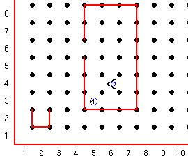

Het doe commando laat Guido meerdere keren een actie doen, maar het heeft een beperking: Je moet van te voren weten hoeveel keer de actie moet worden uitgevoerd.
Als je op een kruispunt staat en je moet een aantal piepers op pakken maar je weet niet hoeveel er zijn heb je niks aan het doe commando.
Het terwijl commando kan beter zijn in deze situatie.
Het algemene formaat van het terwijl commando is:
terwijl test-conditie-is-waar: instructie
Hier is test-conditie-is-waar een conditie die waar of niet waar is en instructie is een enkel commando (bijv. beweeg) of een aantal commando's in een blok.
Zolang de geteste conditie waar is zal de instructie uit gevoerd worden
Dus terwijl is gelijk aan doe behalve dat bij doe het aantal keren dat een instructie uitgevoerd moet worden een vast gegeven is en terwijl een test conditie heeft. Zolang de test condite waar is worden de instructies uitgevoerd totdat de condite niet waar is.
Bijvoorbeeld, om een stapel piepers te pakken kun je zoiets gebruiken:
terwijl naast_een_pieper: pak_pieper
Dit zegt dat zolang er piepers op het kruispunt staan, pak er een en controleer weer. Het resultaat zal zijn dat geen piepers meer zijn op het kruispunt maar dat ze in Guido's pieperzak zitten.
Een terwijl lus schrijven is lastig; er zijn veel details waar je rekening mee moet houden.
In het algemeen zijn de stappen deze:
(Deze stappen wijken iets af van de originele tekst welke enigzins verwarrend was)
1 Kijk welke test conditie waar moet zijn als Guido niet klaar is met de lus.
2 Zorg dat eventuele voorbereidende code compleet is voordat de lus start zodat je start met een bekend.
3 Zorg dat elke passage door de lus bijdraagt aan het voltooien van de lus.
4 Zorg dat de test conditie uiteindelijk onwaar wordt zodat je ook weer uit de lus komt.
5 Schrijf code die zorgt voor het opruimen van oude code na het eindigen van de lus.
Kijk uit voor oneindige lussen, dat zijn lussen die nooit eindigen
Opdracht:
Het is maandag morgen en voordat Guido naar school gaat moet hij nog het vuilnis buiten zetten. Hij weet niet hoeveel vuilniszakken (voorgesteld door piepers) er zijn.
Hij weet dat ze in een hoek van de kamer staan zoals in deze wereld.

Hij moet alle zakken pakken in een keer meenemen en in de container gooien. Gebruik een of meer terwijl commando's om Guido te vertellen het vuil buiten te zetten. Na het weggooien van het vuil moet Guido weer uit de container lopen om te zien of het vuil goed is weggegooid.
Deze serie Guido van Robot lessen zijn geschreven door
Roger Frank.
Commentaar and suggesties over deze lessen kunnen gestuurd worden naar
Stas Zytkiewicz die de lessen
vertaalde naar het Nederlands.
De orginele lessen zijn te vinden op de
Guido van Robot website.
Copyright
© 2003 Jeffrey Elkner.
© 2007 Stas Zytkiewicz.